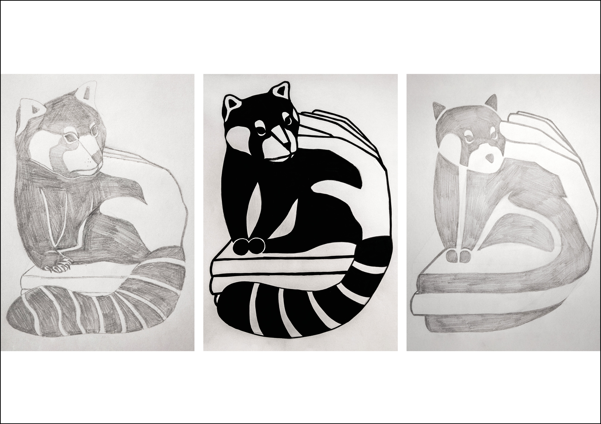

Der Gute Geist
aus meinem Buch
Mein guter Geist Der gute Geist aus meinem Buch ist der rote Panda. Er ist ein friedliches Geschöpf und in den Wäldern der Bücherseiten beheimatet. Hoch oben auf den Büchergipfeln bewacht er seine Seiten und beschützt diese vor Räubern und Unruhestiftern. Durch sein scheues Wesen zeigt er sich nur sehr wenigen Menschen und vorallem keinem Fremden, der sein Revier betritt. Versucht ein Dieb mein Buch zu stehlen, so springt der Panda blitzschnell hinein, ohne dass der Bücherdieb etwas bemerkt. Geschickt wartet er dann den Augenblick ab, in dem der Bücherdieb kurz unaufmerksam ist, kommt aus dem Buch heraus und bringt es mir zurück.


